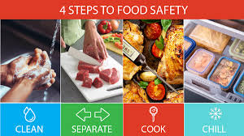
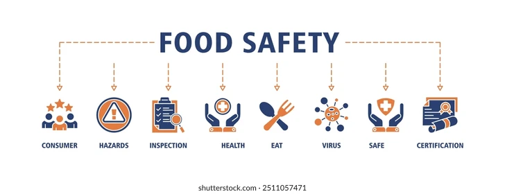
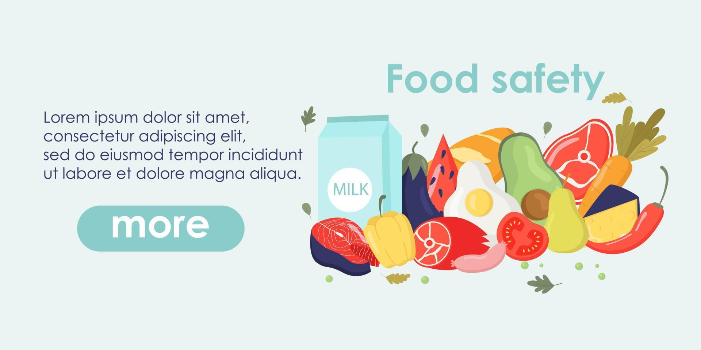

Welcome to the Food Safety Portal
This portal helps you explore food certifications, local delicacies, and safety tips in your city.
Why Food Safety Matters
Ensuring food safety is essential to prevent foodborne illnesses, maintain hygiene, and protect public health. Proper handling, preparation, and storage of food help reduce health risks for consumers.
How We Help
- Provide information about certified restaurants and food vendors.
- Educate residents and visitors about safe food practices.
- Highlight local hygiene standards and inspection protocols.
- Promote awareness of local dietary preferences and healthy eating.
What You Can Do
As a citizen, you can contribute to food safety by:
- Checking for FSSAI or local safety certification at restaurants.
- Observing cleanliness of food handling areas and personnel.
- Reporting unsafe or suspicious food activities to authorities.
- Spreading awareness among your community.
Explore More
Use the navigation above to view certified restaurants, understand safety standards, and discover traditional dishes of your city. Stay informed and eat safe!